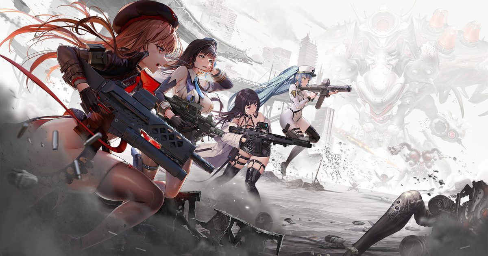

2026-10-29 · 二次元手游
10 月 29 日，Level Infinite 与 SHIFT UP 的《胜利女神：妮姬（GODDESS OF VICTORY: NIKKE）》四周年版本在全球上线，覆盖 PC、iOS 与 Android。内容清单是 10 月 24 日那场周年直播公布的：两章主线、三名新妮姬、四套服装、一次 Stellar Blade 音乐联动、最高 259 次免费招募，以及全套西班牙语文本。这份清单的长度够体面了，但真正值得拆的不是「给了多少」，而是「这些东西被怎么摆在一起」——尤其是那个把免费送的角色又塞进自选箱的安排。

先说一个容易被略过的事实：《妮姬》是 2022 年 11 月 4 日上线的，真正的四周年纪念日应该是 11 月 4 日。而这次周年大版本落在 10 月 29 日，早了六天。
这不是随手定的。多家外媒在报道里都点了一句：妮姬的周年正好卡在《原神》7.2 之前落地，和《崩坏：星穹铁道》4.6、《鸣潮》3.7 的下半场挤在同一个抽卡窗口里。周年不是纪念日，周年是排期战——谁先把玩家的预算和注意力吸走，谁就赢。这一点后面还要回来讲。
1）主线 49、50 章。第 49 章标题是「赌上一切的【决战】」，第 50 章是「我们要登上地面」。官方描述：方舟缓缓上浮，女神像兵临城下，此前的防御战升级为全面的「第三次地表夺还战」，各方势力为决定人类的命运而交锋。Level Infinite 明确说，这两章标志着「地下方舟（Underground Ark）」这条剧情线的收束，同时又留了一句「一个全新的章节将在之后揭晓」。另有两名新 BOSS 同步曝光。
2）三名新妮姬，三个获取方式。
| 妮姬 | 定位 / 阵营 | 获取方式与时间窗 |
|---|---|---|
| 玛丽安：女王 | SSR 火力型 · 朝圣者 · 机枪 · 爆裂 III（周期性多目标攻击） | Pick Up 招募：10/29 维护后 – 11/19 3:59 |
| 红莲：弑神 | SSR 火力型 · 朝圣者 · 突击步枪 · 主打贯通攻击 | Pick Up 招募：11/5 4:00 – 11/26 3:59（比前者晚一周） |
| 长发公主：圣域 | SSR 辅助 · 教皇主题 · 高机动 · 沿用红舞鞋科技 | 免费，可重复取得最多 4 份；通过 MARIA-n 活动、14 日签到、四周年活动获得 |
顺带记一笔命名上的混乱：官方稿件的功能列表里这个单位叫「Scarlet: Goddeath」，小标题里又写成「Hongryeon: Goddeath」。中文口径统一为「红莲：弑神」，但如果你在海外社群看到两种叫法，不是翻译错了，是官方自己就没统一。
3）MARIA-n 剧情活动与一个小游戏。玛丽安在一处庞大的研究设施里醒来，踏上并不熟悉的地面，去挖那些被藏起来的秘密。配套的「Fading Affection」是一个带分支选择的文字冒险小游戏——重访散落的记忆碎片，解锁她过去「未被讲述的结局」。对一款轨道射击玩法的手游来说，专门做一个文字 VN 小游戏来补角色前史，这个投入不算小。
4）Stellar Blade 音乐联动。音游小游戏 TRACING THE STARS 接入 22 首《剑星》曲目，其中只有 4 首免费，另外附带自定义音符皮肤、小游戏背景和「一位特别角色的加入」。22 首里送 4 首，这个比例后面要单独说。
5）四套服装。抽取获取：玛丽安：女王的婚纱皮肤「Last Affection」、Snow White: Heavy Arms 的「Lacrimosa」；战令获取：Neon_Vision 与 Nayuta_Vision。
6）福利与线下。整个活动期间最多可拿到 259 次免费招募；另有四周年妮姬选择箱，可在长发公主：圣域、Chime、Rapunzel: Pure Grace、Snow White: Innocent Days 之间四选一。线下方面，10 月 29 日当天妮姬包下纽约时代广场 One Times Square 大屏一整天（1475 Broadway & 42nd St），玛丽安上屏；Animate 洛杉矶店从 10 月 31 日到 11 月 14 日举办店内活动，含 3D 错觉墙绘与周边。游戏自上线以来累计下载超过 4500 万次。
7）西班牙语本地化。全套西语文本随本次更新上线。SHIFT UP 副总裁兼游戏总监柳亨锡（Yoo Hyongseok）的说法是，这是「呼声很高的功能」，目标是迎接更多来自拉美地区的西班牙语玩家。
大部分二游的周年是「庆典与主线并行」——福利活动是福利活动，剧情照常周更，两者各走各的。《妮姬》这次不是：它把一条跑了很久的长篇剧情线的终点，直接压在周年当天。
这个编排的好处很实在——回归玩家有一个强落点。你被 259 抽吸引回来，登录第一天就有「地下方舟篇终章」这种重量级内容等着你，而不是一堆签到小游戏。这比单纯发福利更能把人留住。
但风险同样明确：官方公布的内容里，没有任何针对 49、50 章的追赶机制、难度调整或剧情跳过选项。也就是说，一个落后于进度的指挥官，从 10 月 24 日直播到 10 月 29 日更新，只有五天时间。如果你卡在 40 章出头，这五天平推到 49 章并不现实，而周年活动又会立刻把你的注意力拉去刷活动。换句话说，这份周年礼真正的门槛不在钱包，在进度条——这是官方在宣传里不会提、但每个落后玩家当天就会撞上的墙。
这是本文最想提醒的一件事。
四周年选择箱的四个选项是：长发公主：圣域、Chime、Rapunzel: Pure Grace、Snow White: Innocent Days。而长发公主：圣域——恰恰是本次本来就能免费拿、且最多能拿 4 份的那个角色。
于是这里出现了一个很典型的消费陷阱：如果你在箱子里选了长发公主：圣域，你等于用一个不可再得的自选名额，换了一份你本来通过签到和活动就能拿到的重复。这不是「送你一个角色」，这是「用一个会重复的名额占掉你一次选择」。
正确的用法是反过来的：先确认自己是否已经通过活动拿到长发公主：圣域（能拿就别在箱子里选她），然后用箱子去补 Chime、Pure Grace 或 Innocent Days 里你缺的那一个。尤其是对回归玩家——你缺的通常不是当期新角色，而是那几个只在早期版本出现过的老单位，而箱子是少数能精准补洞的入口。
顺带说，把免费角色放进自选箱这个做法，本身不是失误，是设计：它提高了玩家「用掉箱子」的速度，也降低了箱子被长期囤积后一次补齐的概率。玩家要做的是识别它，不是骂它。
SHIFT UP 手上有《妮姬》和《剑星》两个自家 IP，这次让它们互相串门，从公司角度看是标准动作——用一款产品的用户池给另一款导流，成本远低于外部联动。
但 22 首里只送 4 首，这个比例说明这次联动的重心不在「内容」，在「货架」：免费的部分是让人点进来试一口的样品，剩下 18 首连同音符皮肤和小游戏背景，是把音游系统变成一次小型促销。联动的形式是音乐，联动的实质是商店。
这不丢人，但值得说清楚——因为很多人看到「联动 22 首」会默认是送 22 首。事实上，它是用一个联动的名字，卖一批本来就该在商店里的东西。
一款上线四年、下载 4500 万的手游，到四周年才补齐全套西语文本，而且官方明确把目标指向拉美（LATAM）。这个信号很清楚：在英语、日语、韩语这些核心市场趋于饱和之后，拉美是下一个要被认真经营的增量池。语言本地化从来不是「做好事」，它是市场部的工作——而它出现在周年版本里，说明这个决策的优先级已经被提到和主线终章同一档。
再回头看开头那六天：庆典提前、卡在《原神》7.2 之前、把主线终章当钩子、把西语当新市场——这四件事放在一起，四周年就不像一场生日会，更像一次完整的商业排期。这没什么不好，只是玩家在开香槟的时候，最好知道自己是在庆生，还是在被排期。
🎮 8bitACG 编辑部
我们的评分：福利诚意 8.5 / 10，叙事编排 8.2 / 10，回归友好度 6.9 / 10，综合 8.0。
加分给「主线终章与周年同日」这个少见的编排，以及免费 SSR 能拿满 4 份的实在；扣分给「49/50 章没有任何追赶机制」和「自选箱里塞本就免费的角色」。
我们的观察：这是《妮姬》第一次把长篇叙事弧的终点放到周年日。它把「周年」从一个发福利的时间点，改造成了一个叙事事件——这一步走对了，因为它给了回归玩家一个比签到更硬的理由。但它同时也制造了新的门槛：进度落后的玩家会在第一天就发现，真正挡在面前的不是抽卡预算，是章节数。
我们的观点：259 抽是这份周年礼的封面，不是内容。内容是两个东西——地下方舟篇的收束、以及官方第一次认真对待拉美市场。至于那个选择箱，我们的建议写得再直白一点：先拿免费的，再开箱子；箱子里那个免费角色，是给没参加活动的人兜底的，不是给你捡便宜的。
我们的案例 / 对比：本站此前拆过几次周年福利结构——《阴阳师》十周年靠「未收录保底 + 神眷符咒」解决的是「老玩家什么都不缺」的死局；《星塔旅人》一周年用「100 张限定券」做的是带方向盘的慷慨；而《妮姬》这次的「免费 SSR 可拿 4 份 + 选择箱四选一」，解决的是另一个问题——它要让回归玩家在第一天就凑出一个能打的队伍。三种思路对应三种不同的人群结构，没有优劣，只是站位不同。
我们的实验：给今天上线的人一个当天就能做完的验证——登录后先不要碰任何招募，直接打开主线进度页面，记下你当前所在的章节数，再翻到 MARIA-n 活动和 14 日签到的领取条件，把「长发公主：圣域」的四份获取路径逐条确认清楚。做完这三步再决定箱子选谁。如果你在二十分钟内说不出「我到底能从哪些活动拿到几份」，那说明这份周年礼的信息设计，本身就是有成本的。
主线 49、50 章收束地下方舟篇，三名新妮姬，259 次免费招募，一个免费的 SSR 辅助，22 首《剑星》曲目（4 首免费），全套西语文本，外加时代广场一整天的大屏。四周年这个体量，对得起四年和 4500 万下载。
但如果你只想记住三句话，记这三句：周年比纪念日早了六天，因为它在跟《原神》7.2 抢窗口；259 抽的福利是真的，但箱子里的免费角色是个坑；而 49、50 章没有追赶机制，落后的指挥官从今天起就该开始推主线了。